Aktuální nabídka
15 nemovitostí, především byty, rodinné domy, pozemky. Každá má vlastní stránku s fotkami, popisem a mapou.
Prohlédnout nabídku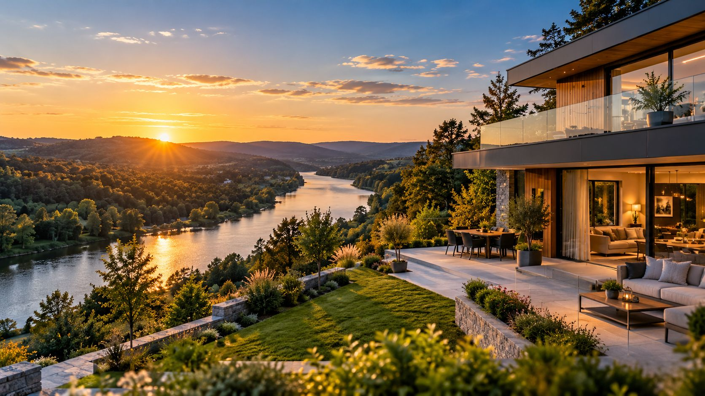

Martin Jelínek · Realitní makléř · REMAX 4 You
Jmenuji se Martin Jelínek, jsem realitní makléř kanceláře REMAX 4 You. Prodej, pronájem a odhad ceny nemovitostí v Ústeckém, Karlovarském, Plzeňském, Libereckém a Středočeském kraji a v Praze.
Mé jméno je Martin Jelínek a do realit přicházím v roce 2025, kdy jsem v říjnu složil státní zkoušky a do světa realit jsem ten samý měsíc vstoupil ihned s první prodanou nemovitostí.
15 nemovitostí, především byty, rodinné domy, pozemky. Každá má vlastní stránku s fotkami, popisem a mapou.
Prohlédnout nabídku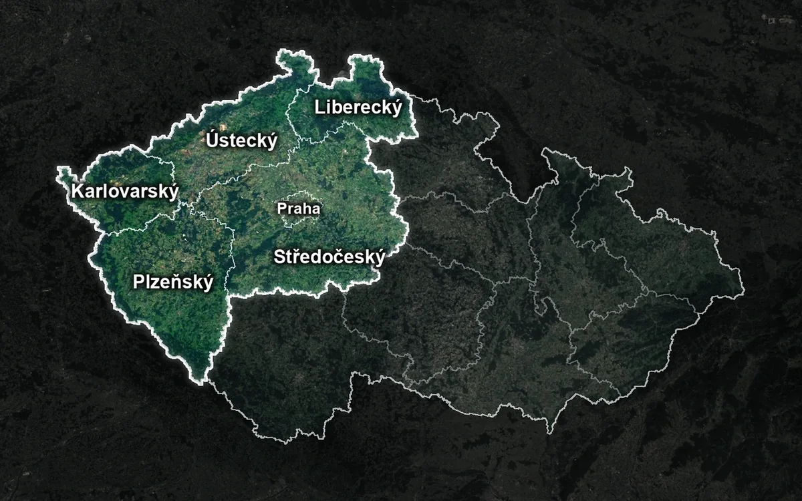
Sentinel-2 cloudless 2016 © EOX (CC BY 4.0), hranice © OpenStreetMapÚstecký kraj, Karlovarský kraj, Plzeňský kraj, Liberecký kraj, Středočeský kraj a Praha. Na prodeji nemovitosti se můžeme domluvit kdekoli v České republice.
Nemovitosti v lokalitěOdhad tržní ceny nemovitosti, příprava prezentace, prohlídky, smlouvy a předání. Vy podepisujete, já zařizuji.
Domluvit schůzku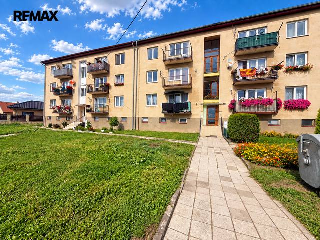
Prodej · Byt 2 250 000 KčProdej bytu 3+1 v osobním vlastnictví 64 m², Podbořany Letov, Podbořany 3+164 m²1. podlaží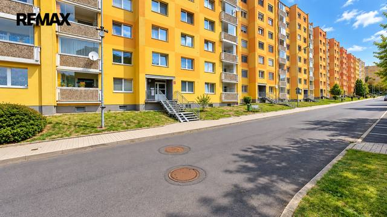
Prodej · BytVideo 2 990 000 KčProdej bytu 3+1 v družstevním vlastnictví 81 m², Klášterec nad Ohří Klášterec nad Ohří 3+181 m²2. podlaží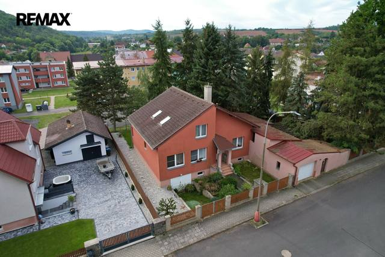
Prodej · DůmVideo 5 600 000 KčProdej domu 136 m², Kryry Kryry 136 m²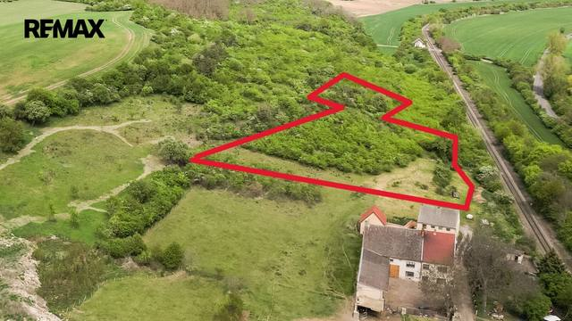
Prodej · Pozemek 500 000 KčProdej pozemku 7734 m², Holedeč Veletice, Holedeč 7734 m²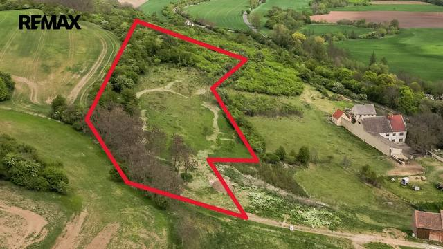
Prodej · Pozemek 2 200 000 KčProdej pozemku 12056 m², Holedeč Veletice, Holedeč 12056 m²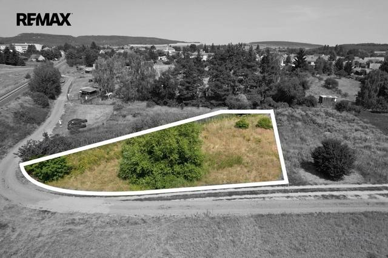
Prodej · PozemekVideo 900 000 KčProdej pozemku 1181 m², Vroutek Vroutek 1181 m²Tomuto výběru zatím neodpovídá žádná nabídka. Napište mi, co hledáte.
Každý špendlík je jedna nemovitost z mé nabídky. Klikněte a podívejte se.
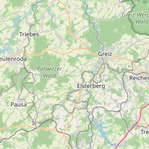
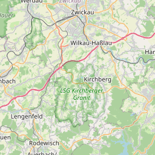
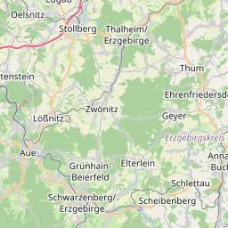
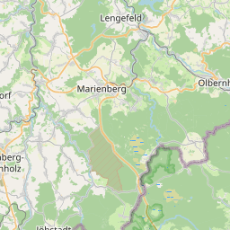
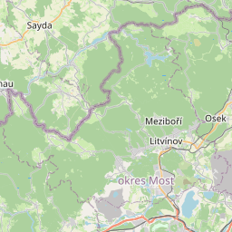
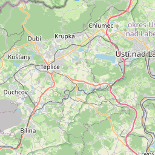
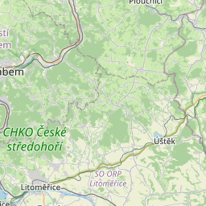
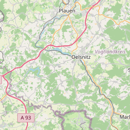
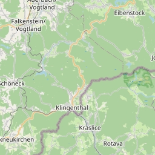
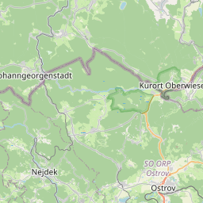
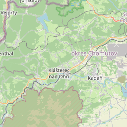
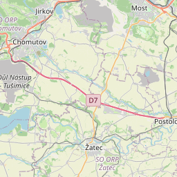
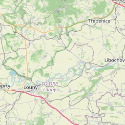
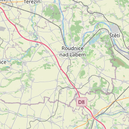
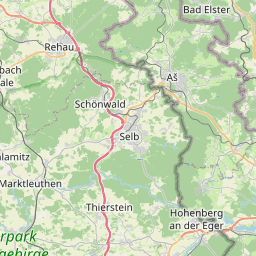
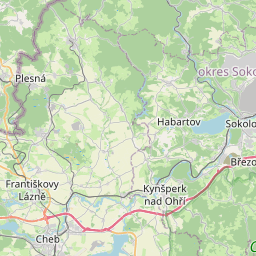
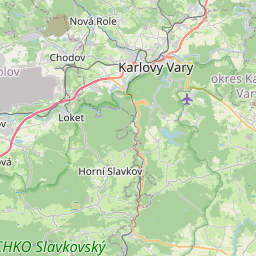
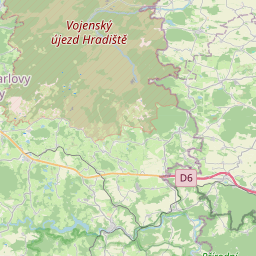
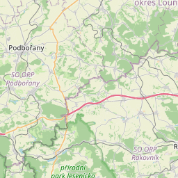
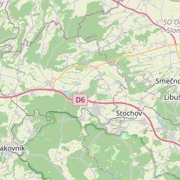
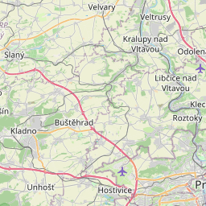
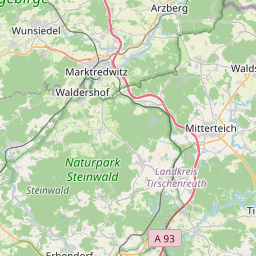
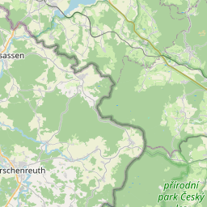
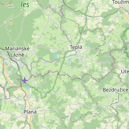
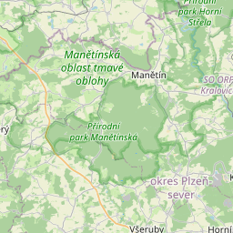
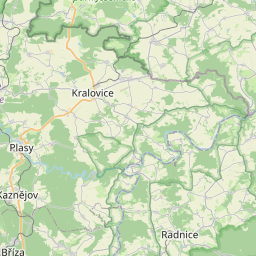
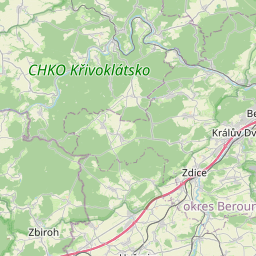
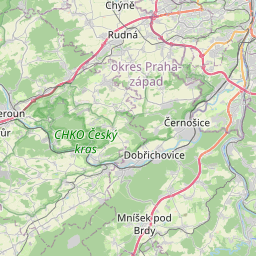
© přispěvatelé OpenStreetMap
Na co se ptáte nejčastěji, než se potkáme.
Odhad nemovitosti se liší podle účelu: jinak se zpracovává odhad pro dědické řízení a jinak odhad tržní ceny nemovitosti pro prodej. Cena je proto individuální, řeknu Vám ji předem podle konkrétní nemovitosti.
Nejdřív prohlídka a odhad ceny, pak příprava prezentace (fotografie, popis, inzerce), prohlídky se zájemci, rezervační smlouva, kupní smlouva s advokátní úschovou a předání nemovitosti a přepis energií. Geometrické plány a pasporty nemovitostí jsem schopen také zajistit a zlegalizovat tak vše potřebné v rámci prodeje Vaší nemovitosti. O každém kroku víte předem.